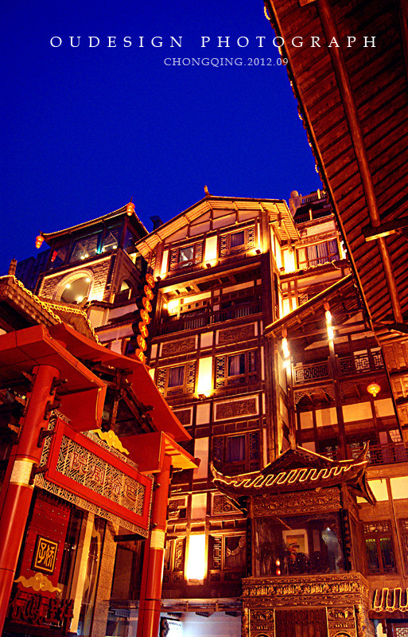
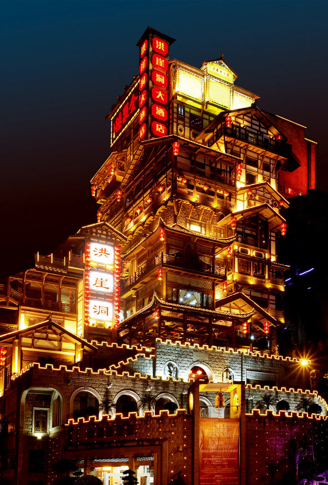
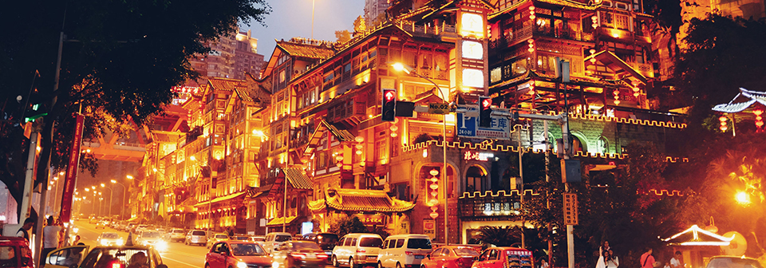

洪崖洞旅游概述
洪崖洞位于重庆市核心商圈解放碑沧白路、长江、嘉陵江两江交汇的滨江地带，是新兴的集娱乐、休闲、观光、餐饮于一体的大型功能区域，也是时下重庆最火爆、最时尚、最具风情的都市休闲区。四条大街洪崖洞由纸盐河酒吧街、天成巷巴渝风情街、盛宴美食街及异域风情城市阳台四条大街组…



重庆·洪崖洞位于重庆市核心商圈解放碑沧白路、长江、嘉陵江两江交汇的滨江地带，坐拥城市旅游景观、商务休闲景观和城市人文景观于一体。外来游客可观吊脚群楼、观洪崖滴翠，逛山城老街、赏巴渝文化，烫山城火锅、看两江汇流，品天下美食、玩不夜风情的休闲娱乐新天地。她是重庆人的休闲胜区，再现老重庆的真实写照，重庆市最亮丽的城市名片。
重庆·洪崖洞整体业态分为纸盐河酒吧街、天成巷巴渝风情街、盛宴美食街及异域风情城市阳台四条大街。四条大街分别融汇了当下所有时尚元素，美国全球连锁海盗酒吧等一系列全球知名酒吧的加盟，不但可引领重庆新娱乐生活方式，也将带动重庆夜生活的新标向。
天成巷巴渝风情街为世人展示的一种不同于以往的时尚潮流，展示出当时盛行于世的青砖、石瓦、红檐绿瓦的古典民居。让你仿佛有返回到“陪都繁盛时期”之感。
盛宴美食街为大家展现的则是一种“另类美食城”的盛景，一个集中外古今名店于一堂的美食盛景就在重庆·洪崖洞。
重庆·洪崖洞，在不久的将来，将成为一个真正“让世界了解重庆，让世界爱上重庆”的佳作之地。而重庆·洪崖洞也将是一个颠覆重庆人传统生活习惯的纯生活休闲娱乐新空间。